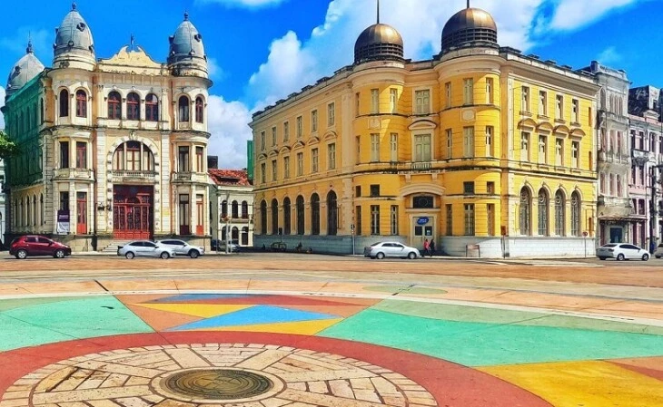

Onde fica
O Marco Zero compreende a região da Praça Barão do Rio Branco, que está situada no município de Recife, no estado de Pernambuco. A atração fica próxima do bairro do Recife Antigo, e está a menos de 10 km de Olinda.
O Marco Zero compreende a região da Praça Barão do Rio Branco, que está situada no município de Recife, no estado de Pernambuco. A atração fica próxima do bairro do Recife Antigo, e está a menos de 10 km de Olinda.
O espaço surgiu junto à construção da cidade e também é responsável por preservar grande parte da história local. Pela região, é possível apreciar construções da época do Brasil Colonial, assim como estátuas, parques e monumentos históricos.
Na mesma praça também está situada a rosa-dos-ventos do Marco Zero. A atração foi anexada à praça na década de 1930, pelo artista pernambucano Cícero Dias. Uma curiosidade é que o marco reúne todas as distâncias oficiais de Pernambuco, dando origem ao termo ‘km 0’ do estado.
